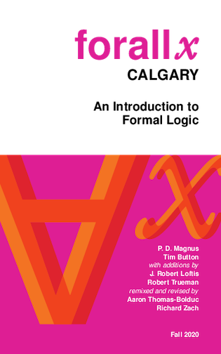

Introduction to Formal Methods
2026-01-07
Overview
Aim of Course
Introductory survey of some formal methods that are of broad philosophical use.
Four Sections
- Propositional Logic
- Modal Logic and Conditionals
- Probability and Decision
- Game Theory
Propositional Logic
- This is the logic of sentences that can be true or false, and that can combine to form longer sentences.
- So as well as looking at simple sentences, like Nadia sings, we will look at sentences that are built from simple sentences.
- Examples of such sentences are Nadia doesn’t sing, Nadia sings and Bethany dances, and If Nadia sings, Simone sleeps.
Modal Logic
This is the logic of ‘must’ and ‘might’. It has as many applications as there are interpretations of ‘must’ and ‘might’. The primary interpretations we’ll look at are:
- Metaphysical
- Epistemological
- Moral
Probability and Decision
- Sometimes we can’t infer that a conclusion is definitely true, but we can infer that it is probably true.
- We will look at some tools for regimenting how and when we make such inferences.
- We will also look at how these probabilities feed into decision making under uncertainty.
Game Theory
- Finally, we will look at decisions in situations where other people are making similar decisions, and your return is affected by both what you and they do.
- The resulting theory is a very useful tool for coming up with simple models of complicated situations.
Textbooks
There are four - all of them available through Canvas.
- forall x: Calgary Edition by P. D. Magnus, Tim Button, J. Robert Loftis, Robert Trueman, Aaron Thomas-Bolduc and Richard Zach.
- Boxes and Diamonds, Ann Arbor remix, written by Richard Zach, and edited by me.
- Odds and Ends by Jonathan Weisberg.
- Game Theory by Giacomo Bonanno.
The four books are for the four parts of the course.
forall x
http://forallx.openlogicproject.org
Boxes and Diamonds

https://bd.openlogicproject.org

Boxes and Diamonds - Ann Arbor
Odds and Ends

https://jonathanweisberg.org/vip/
Game Theory
https://faculty.econ.ucdavis.edu/faculty/bonanno/GT_Book.html
Assessment
- The primary assessment will be weekly assignments, most of which will be administered through Canvas.
- Several are already posted, and they will be due each week on Thursday at 5pm.
- There are exceptions for this week, and the week after the mid-term break.
- There will also be an end of term exam.
Syllabus
- The syllabus is available on Canvas. Indeed, it is the first thing that comes up when you load Canvas.
- Read it closely!
- It will tell you what we’re covering each week, and where you should be each week.
Arguments
Quick Summary
We’re discussing the nature of arguments, and in particular, the role of premises and conclusions.
Associated Reading
forall x, chapter 1, “Arguments”.
Arguments
Logic studies certain properties of arguments.
An argument, in the sense we’re interested in, has two parts:
- Premises
- Conclusion
Example
- All kangaroos are wise.
- Skippy is a kangaroo.
- \(\therefore\)
- Skippy is wise.
Read \(\therefore\) as ‘therefore’.
Premises
- All kangaroos are wise.
- Skippy is a kangaroo.
- \(\therefore\)
- Skippy is wise.
- The premises are the reasons that are given.
- In this argument there are two.
Conclusion
- All kangaroos are wise.
- Skippy is a kangaroo.
- \(\therefore\)
- Skippy is wise.
The conclusion is what comes after ‘therefore’ and is supported by the premises.
Ordinary English
- In ordinary English, the order of the premises and conclusion is not as fixed as it is here.
- The textbook has examples where the conclusion comes after the premises, as in our presentations, before the premises, and between the premises.
- The general rule is that it is introduced by a word like ‘so’, or ‘therefore’, or, if you’re really old school, ‘hence’.
The Premise Set
- All kangaroos are wise.
- Skippy is a kangaroo.
- \(\therefore\)
- Skippy is wise.
There can be zero, one or multiple premises. Formally, we’ll say there is a set of premises.
Zero Premises
Here’s my formal representation of (part of) the opening sentence of the Declaration of Independence.
- \(\therefore\)
- All men are created equal.
Saying that something is self-evident is a way of saying that it follows from no background at all.
One Premise
- The cinema is closed.
- \(\therefore\)
- We shouldn’t go to the cinema.
This isn’t what we’ll call a valid argument, but it’s a perfectly good argument in lots of contexts.
Conclusion
- All kangaroos are wise.
- Skippy is a kangaroo.
- \(\therefore\)
- Skippy is wise.
We don’t allow this flexibility to conclusions.
Arguments have a single conclusion.
Chained Arguments
- Sometimes a conclusion of one argument will go to be a premise in another argument.
- But any given argument aims to prove just one thing.
Representation
- All kangaroos are wise.
- Skippy is a kangaroo.
- \(\therefore\)
- Skippy is wise.
When I write arguments like this, I’m merely presenting them, not asserting that they have any nice features.
Validity
Overview of Section
Introducing the concept of validity.
Associated Reading
forall x, chapter 2, “The Scope of Logic”.
Virtues of Arguments
Here are some good making features of arguments.
- Premises are true.
- Premises are known.
- Premises are accepted in debate.
- Premises are evidence for the conclusion.
- Premises guarantee the truth of the conclusion.
Logic
To a first approximation, logic is about the last of these virtues.
- Does the truth of a set of premises guarantee the truth of the conclusion?
- If so, we’ll say the argument is valid.
Guarantee
What is it for the premises to guarantee truth?
- It’s for every case where the premises are true to also be a case where the conclusion is true.
- That’s nice, you might say, but what’s a case?
Cases
- This, I’m afraid, we’re going to leave a little abstract.
- As the book in effect notes, it’s probably best to leave this as a placeholder.
- Different notions of what a case are get you different notions of what arguments are valid.
- But you get into deep metaphysical waters here pretty fast; let’s retreat to some definitions.
Terminology
When an argument, with premises \(P_1, P_2, \dots, P_n\) and conclusion \(C\) is valid, we’ll say all the following things are true.
- The premises entail the conclusion.
- The conclusion follows from the premises.
- The conclusion is a consequence of the premises.
Invalid
- An argument is invalid just in case it is not valid.
- That is, it is invalid if there is a case where the premises are true and the conclusion false.
Structure
- Logic is largely about validity, about which premises guarantee the truth of which conclusions.
- It’s about a special kind of guarantee, one that holds in virtue of the structure or form of the premises and conclusion.
A Valid Argument
- All kangaroos are wise.
- Skippy is a kangaroo.
- \(\therefore\)
- Skippy is wise.
Non-Structural Guarantee
Compare the Skippy argument with this one.
- Today is Wednesday.
- \(\therefore\)
- Tomorrow is Thursday.
The premise guarantees the truth of the conclusion, but it does so in virtue of the meanings of ‘Wednesday’ and ‘Thursday’, not structural features.
Form and Structure
- In the book they talk about the form of arguments.
- This is just the same thing as I’m meaning by structure.
- There is something about the Skippy example that’s special; just the form of the argument shows that it is valid.
Structure and Substitution
When the structure of the argument does the guaranteeing, the guarantee would persist through some substitutions.
- All kangaroos are wise.
- Skippy is a kangaroo.
- \(\therefore\)
- Skippy is wise.
Structure and Substitution
When the structure of the argument does the guaranteeing, the guarantee would persist through some substitutions.
- All kangaroos are wise.
- Lucky is a kangaroo.
- \(\therefore\)
- Lucky is wise.
Structure and Substitution
When the structure of the argument does the guaranteeing, the guarantee would persist through some substitutions.
- All koalas are wise.
- Lucky is a koala.
- \(\therefore\)
- Lucky is wise.
Structure and Substitution
When the structure of the argument does the guaranteeing, the guarantee would persist through some substitutions.
- All koalas are dishonest.
- Lucky is a koala.
- \(\therefore\)
- Lucky is dishonest.
Terminology
- We’ll say an argument is valid just in case the truth of the premises guarantees the truth of the conclusion.
- We’ll say an argument is formally valid, or occasionally logically valid, if it is valid, and any argument with the same form/structure is valid.
- We’ll say an argument is sound just in case it is valid and has true premises.
- We won’t have much interest here in soundness; just in validity.
Structure
- You might have noticed that I never actually defined what it is for two arguments to share a structure.
- I just said that changing a name (consistently throughout the argument), or changing a noun/adjective (consistently) preserves structure.
- But I didn’t say more than that.
- Hold that thought! We’ll have quite a lot to say as the course goes on about this notion of structure.
Validity
Here are some equivalent ways to define validity.
- An argument is valid if necessarily, when the premises are true, the conclusion is too.
- An argument is valid if it is impossible for the premises to be true and the conclusion to not be true.
We’ll use that last formulation a lot.
For Next Time
We’ll start our look at the most fundamental kind of logic: propositional logic.

PHIL 305 | University of Michigan